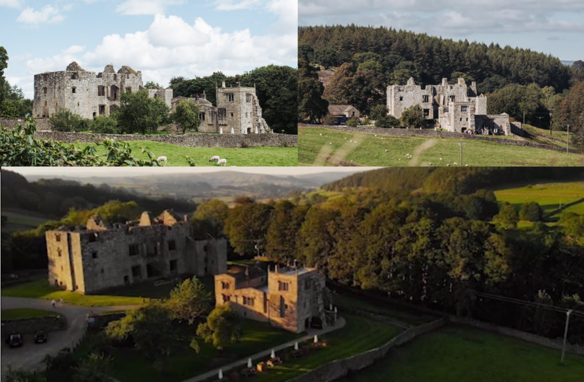

The Venue
We found The Priest House completely by chance while hunting for a spot to watch the Tour De Yorkshire. We knew then that we had found our wedding venue.
From their website:
"Nestled in the shadow of the impressive ruins of Barden Tower, a Grade 1 listed building with superb views of the valley and surrounding hills, The Priests House has a fine reputation for excellent cuisine and service. Whether for an intimate and exclusive wedding, a private function, a Sunday lunch or a genuine medieval banquet this is a unique North Yorkshire venue."
The Priests House
Barden Tower
Bolton Abbey
Skipton
North Yorkshire
BD23 6AS